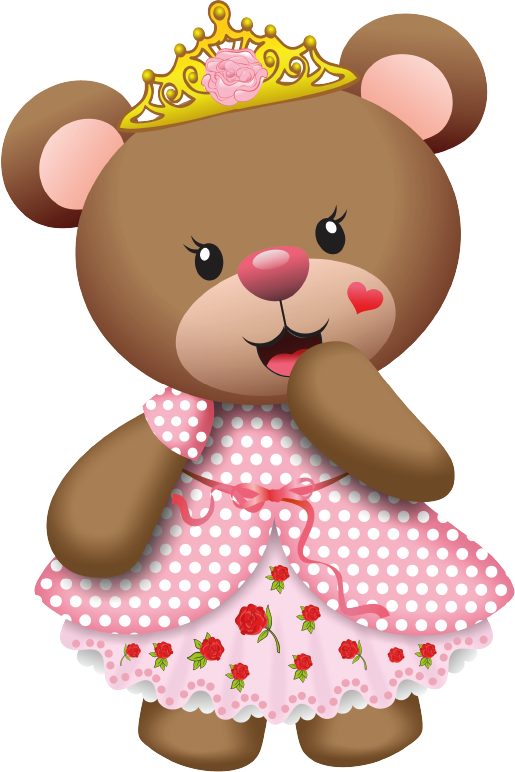
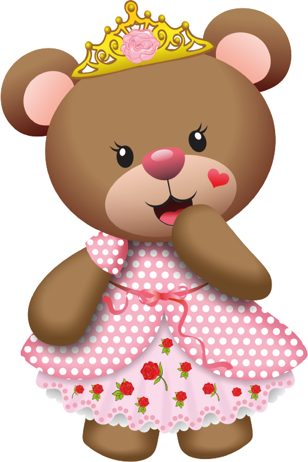
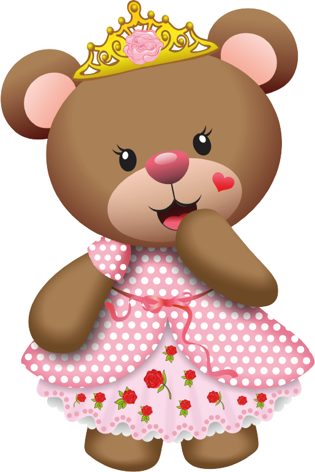

Estava vendo nossas fotos, escutando nossos áudios acabei viajando por um momento nas nossas lembranças, percebi como eu sou feliz do seu lado... E q vc é uma peça fundamental na minha vida, vi umas fotos do começo do ano, e percebi q dps de te conhecer eu mudei pra melhor, tanto fisicamente, intelectualmente e emocionalmente. Isso é MT louco né? Com TD certeza vc é alguém especial que Deus colocou na minha vida... Foi tão inusitado, tão inesperado, mas lá no fundo eu sabia que era vc. Não sei mas pra mim eu sentia isso KKKKKKKKKKKKKKKK Um sentimento que eu nunca senti. Quando eu estou com vc é como se o tempo parasse, que só existisse nos dois no mundo, mas ao msm tempo passa tão rápido e parece q o tempo voa... Olha, talvez eu tenha aberto meus olhos mais ainda, pq eu percebi q vc é uma pessoa diferente de qualquer outra, e tenho certeza q não há ninguém como vc... Eu não quero e não vou disperdiçar a honra q eu tenho q é estar do seu lado, vou fazer acontecer, vou te deixar segura, cuidar de vc, te fazer uma pessoa ainda mais feliz, assim como vc faz comigo. Vou te apoiar nas suas batalhas e me alegrar com as suas conquistas, assim como eu sei q fará também COMIGO. Somos novos e isso eu sei. Somos pessoas q ainda tem MT que viver, mas eu adoraria passar por TD isso, com vc a meu lado. Já trocamos tantas risadas, tantos olhares, tantos abraços e beijos, mas também tantas lágrimas... Sei q um relacionamento não é nada fácil... Mas eu estou disposto a continuar vivendo um romance do krlh, com vc. Eu não gostaria de ter um final feliz com vc, pq não quero q tenhamos um final. Então vamos continuar ao lado um do outro, na felicidade e na TRISTEza, sem desistir, pq é assim q se mantém uma relação. Obrigado por ser quem vc é, obrigado por ter a maior paciência do mundo cmg, obrigado por me ajudar nos meus momentos difíceis, e obrigado por estar CMG sempre quando preciso, obrigado por não desistir de mim. vou fazer isso valer apena pra vc.

QUER NAMORAR COMIGO?